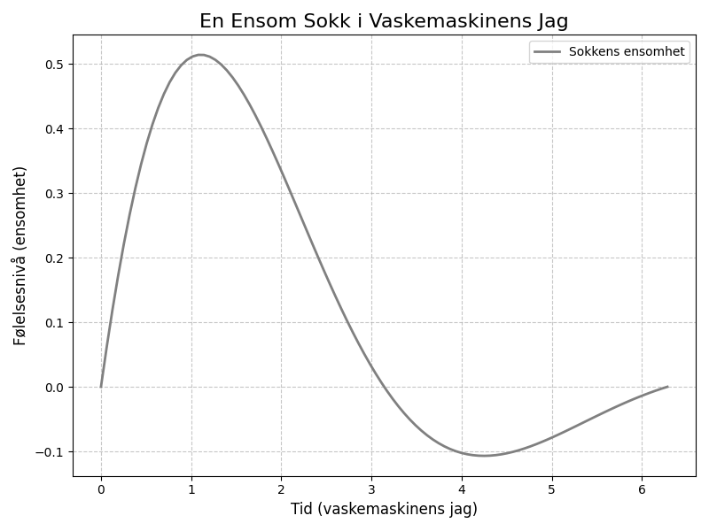

En ensom sokk i vaskemaskinens jag, drømmer om sin partner hver eneste dag. Hvor ble den andre av, i hvirvler av skum? Nå dveler den alene i et metallisk rom.

import matplotlib.pyplot as plt
import numpy as np
# Dikt
dikt = """
En ensom sokk i vaskemaskinens jag,
drømmer om sin partner hver eneste dag.
Hvor ble den andre av, i hvirvler av skum?
Nå dveler den alene i et metallisk rom.
"""
# Definer x-verdier for grafen
x = np.linspace(0, 2 * np.pi, 100)
# Beregn y-verdier basert på diktets følelser (ensomhet)
y = np.sin(x) * np.exp(-x/2) # Ensomhet som en bølge som avtar
# Lag en figur og akse
fig, ax = plt.subplots(figsize=(8, 6))
# Plott dataene
ax.plot(x, y, color='gray', linewidth=2, label='Sokkens ensomhet')
# Legg til tittel og etiketter
ax.set_title('En Ensom Sokk i Vaskemaskinens Jag', fontsize=16)
ax.set_xlabel('Tid (vaskemaskinens jag)', fontsize=12)
ax.set_ylabel('Følelsesnivå (ensomhet)', fontsize=12)
# Legg til rutenett
ax.grid(True, linestyle='--', alpha=0.7)
# Legg til en legende
ax.legend(loc='upper right')
# Juster layout for å unngå overlapp
plt.tight_layout()
# Lagre figuren
plt.savefig(output_path)execution_ok=True fallback_used=False image_ok=True